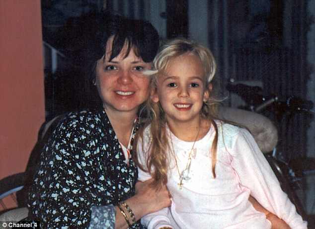

1996년 12월 26일 미국의 콜로라도 주에서 일어난 어린이 살인사건.
12월 25일, 존베넷 가족은 이웃인 화이트 부부의 자택에서 열린 크리스마스 파티에 참석했다.
6세 여아 존베넷 패트리샤 램지가 가족과 함께 차를 타고 집으로 돌아온 다음날인 26일 아침,
모친인 팻시는 자택의 계단에 놓인 '당신의 딸을 데리고 있다.
그녀를 무사히 돌려받고 싶으면, 11만 8천 달러의 금액을 준비하라.'는
내용의 협박장을 발견했다.[2] 이후 다급히 존베넷을 찾다가 딸을 찾을 수 없자 딸이 유괴되었다고 911에 신고했다.
이에 조사본부가 설치되었으며, 부친은 범인이 남긴 세 장의 쪽지를 경찰에게 제공했다.
메시지가 담긴 쪽지는 집에 있던 필기구와 메모지로 써졌으며, 돈을 요구하는 내용과 함께 만약 경찰에 신고를 하면
딸의 안전을 보장할 수 없다는 말과 오전 8시부터 10시 사이에 연락하겠다는 내용이 적혀 있었다.
그러나 연락은 오지 않았고, 후에 경찰이 그때까지 조사하지 않았던 지하실을 존과 지인인 화이트가 탐색하던 중,
오전에 화이트가 살펴보지 않았던 와인창고 안에서 딸의 시신을 발견한다.
존베넷은 자신이 평소 아끼던 새하얀 담요에 덮인 채, 입에는 접착성 테이프가 붙여져 있었으며 머리 부분을
범인이 사용하던 둔기인 손전등으로 피격당해 큰 상처가 나 있었고,
얼굴엔 구타를 당한 듯 시퍼렇게 멍이 들었으며 나일론 끈으로 목이 거의 쪼그라들 정도로 졸린 상태의 끔찍한 모습의 시신으로 발견되었다.
최종적으로 범인은 체포되지 않았다.
발견된 존베넷의 시신을 부검한 결과, 두개골이 손상되어 있었으며 성폭행을 당했다는 사실이 발견되었다.
그 외에도 누군가가 먹인 듯한 파인애플이 위장에서 발견되기도 했다.
